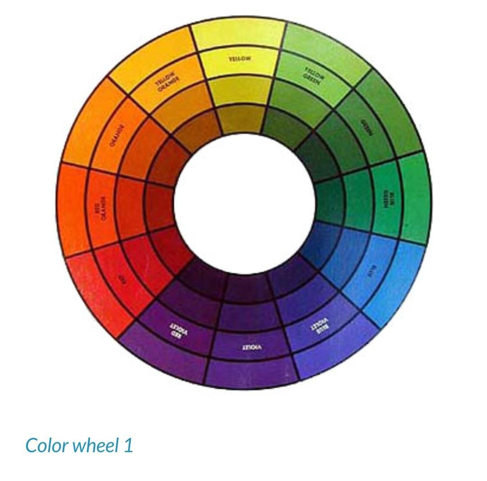
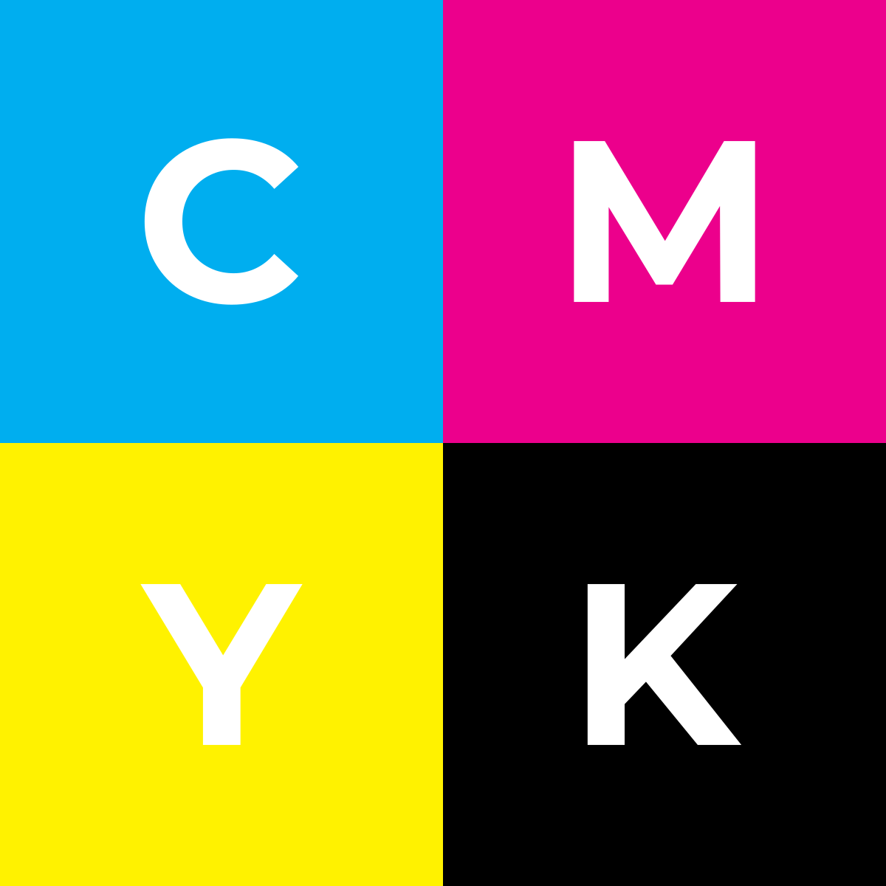

German Bauhaus school educators Josef Albers and Johannes Itten helped define and expand upon color theory during the years 1919 – 1923. Albers created a course in color theory that inspired the tutorial in this chapter. Students who attend art and design universities typically complete these color studies using pigment and brushes or with Color-Aid paper, however formal color studies are demonstrated in the digital environment with the following four exercises where hue, value, and contrast are exploited to achieve various color relationships. The traditional (analog) color wheel utilizes the RYB (red-yellow-blue) color model. In this subtractive color model, red, yellow, and blue are the primary hues (what we think of as colors), which can be mixed together to create any other color within the color wheel. Opposite colors on the wheel are called complementary, while analogous colors sit side-by-side on the wheel. When the primaries are mixed together in the subtractive system, the resulting product is black. In the digital spectrum, the RGB (red-green-blue) additive color system is used on television screens and computer monitors. Colored light is mixed to create hue and value with red, green and blue as the primary colors. When the primary colors in the RGB model are mixed together, the result is white.
The CMYK (cyan, magenta, yellow, and black) color model is another digital spectrum that is specific to the print industry. Artists and designers often create high volumes of printed media using the CMYK color model to synchronize the digital file with the four corresponding printing plates. This system is also subtractive, even though it is utilized in a digital environment, so mixing equal parts of cyan, magenta, yellow and black produces black. The CMYK color mode enables digital producers to access Pantone® colors, a set of industry specific colors that are made to render a clear translation between the color that is presented on the screen and the color that will result from the printer’s equipment.
Vocabulary Hue is color (e.g. red, blue, green, yellow) Intensity, Saturation, Chroma and Brilliance all refer to how much pigment is in a color, which translates to how vivid a color appears. Value is measured by how much white or black is mixed with a hue, or, it can be registered as the grayscale equivalent of a color. Shades are a hue mixed with black. Tints are a hue mixed with white. Analogous colors are adjacent on the color wheel